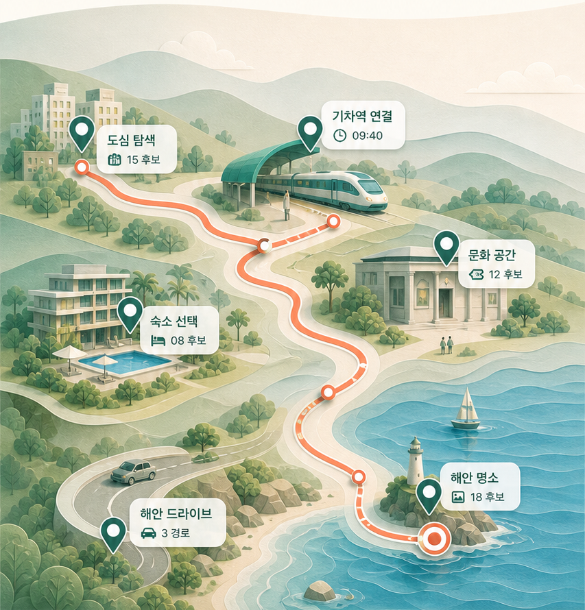

여행 중인 지역을 고릅니다
현재 위치를 확인하거나 전국 지역 목록에서 직접 선택할 수 있습니다.
iPhone · 제공 중
여행이 흔들릴 때, 사람부터 다시 살립니다.
비가 오거나 시간이 부족해졌을 때, 아이가 지쳤거나 걷는 거리를 줄여야 할 때. 처음 짠 계획을 붙잡기보다 지금 갈 수 있는 곳을 다시 찾아봅니다.
지금 할 수 있는 일
현재 위치를 확인하거나 전국 지역 목록에서 직접 선택할 수 있습니다.
남은 시간, 동행자, 걷기, 실내·실외 같은 조건을 기준으로 후보를 다시 봅니다.
현재 여행에 장소를 추가하거나 바꾸고, 필요 없는 일정은 제외할 수 있습니다.
관광 후보의 출처와 확인이 필요한 정보를 구분해 보여주는 방향으로 운영하고 있습니다.
여행 중 다시 짜기
TRIP119는 처음부터 완벽한 여행을 대신 짜주는 앱보다, 이미 여행 중인 사람이 다음 선택을 다시 할 수 있게 돕는 쪽에 가깝습니다.

다음 업데이트
새 여행을 시작해도 이전에 저장한 여행을 다시 볼 수 있도록 정리합니다.
여러 여행 기록 중 지금 보고 있는 여행을 안정적으로 구분하도록 개선합니다.
현재 여행계획은 건드리지 않고, 지금 상황에서 갈 만한 장소만 따로 찾아보는 흐름으로 바꿉니다.
앞으로 준비하는 기능
플랫폼
현재 TRIP119의 주력 버전입니다.
같은 여행 흐름을 Android에서도 사용할 수 있도록 준비하고 있습니다.
설치 없이 여행 계획과 상황 변경 기능을 사용할 수 있는 Web 버전도 준비하고 있습니다.
Support
현재는 이메일로 문의를 받고 있습니다. 문의폼도 준비하고 있습니다.
TRIP119는 119 긴급신고·구조 서비스나 실시간 길 안내 서비스가 아닙니다. 생명이나 안전이 위급한 상황에서는 즉시 119 또는 현지 긴급기관에 연락하세요.